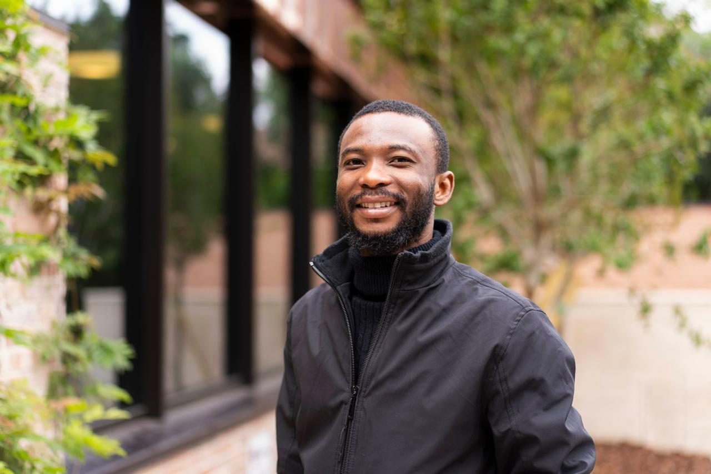

Our Team
The people behind the vision
De_Light Foundation is supported by individuals who share a commitment to strengthening young people through faith, education, mentorship and service.

Divine-Blessing Chinwendu Ajah
Secretary
Divine-Blessing Ajah is a medical doctor with a passion for mentorship, leadership, personal development, and Christian service.
She has held various leadership and administrative roles, contributing to initiatives focused on community building, youth engagement, and personal growth. She is particularly passionate about helping young Christians discover their purpose, develop godly character, and navigate life's challenges through faith-based mentorship. She believes in raising a generation of young people who are spiritually grounded, purpose-driven, and equipped to positively influence their communities.

Ezeanyika Deborah
Communication & Event Coordinator
A Mass Communication graduate from Bingham University, entrepreneur, social media manager and SGBV advocate, and the CEO of Splendor's Aura, a perfume brand driven by a passion for helping people smell good and feel confident.
Passionate about leadership, advocacy and making a positive impact, and committed to bringing leadership skills, creativity and experience to ensure that De_Light Foundation thrives and achieves its goals.

Emmanuel Ajisafe
Scholarship Mentorship Coordinator & Spiritual Director
Emmanuel Ajisafe is a development professional with experience in policy research, management consulting, economic development and sustainability.
He holds an MA in International Affairs from Johns Hopkins University School of Advanced International Studies (SAIS). His interests include energy transition, climate investment, infrastructure development and public policy. He is passionate about revealing Christ through every experience, relationship and opportunity, while contributing to Africa's sustainable development.